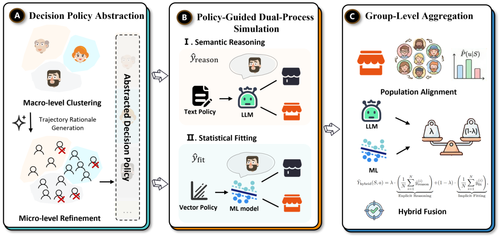
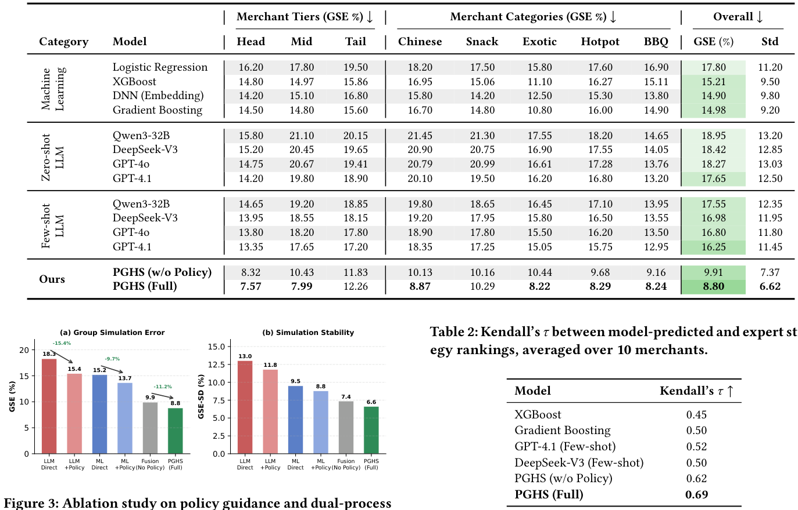
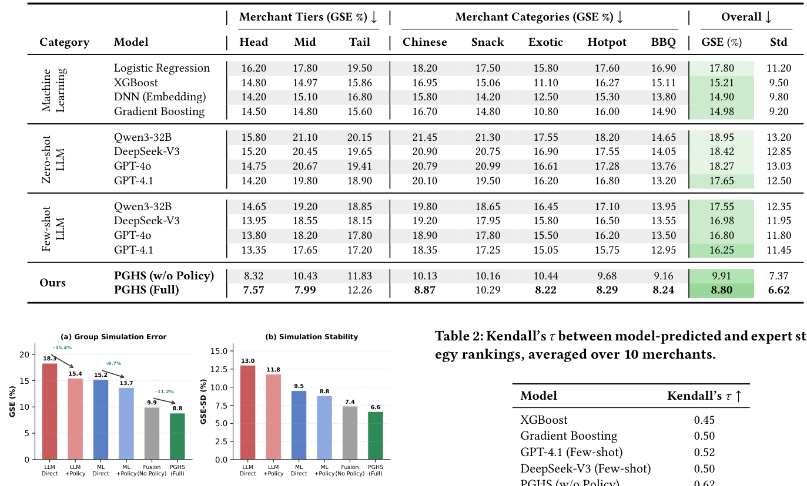
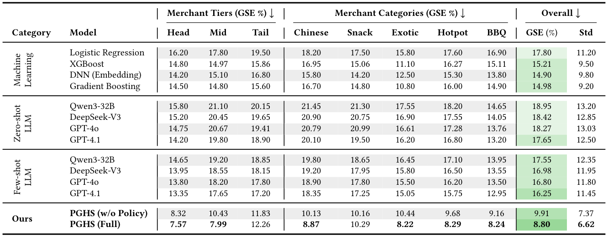
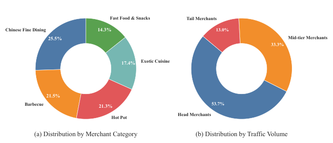

Meituan Merchant Business Diagnosis via Policy-Guided Dual-Process User Simulation (基于策略引导双过程用户模拟的美团商户经营诊断)
- 会议/期刊: SIGIR 2026 (Industry Track)
- 推荐链路定位: 端到端生成式 / 反事实仿真评估 (Counterfactual Simulation for Merchant Diagnosis)
- 研究方向: 对话推荐与智能体仿真 / 大语言模型推荐 (LLM4Rec)
- 论文原文: https://arxiv.org/abs/2604.15190v1
- 开源代码: 暂未开源（原文与预提取均未发现开源仓库链接）
TL;DR (核心速览)
针对商户经营诊断中"在线 A/B 测试成本高、高维语义策略空间无法穷举"的痛点，本文提出 PGHS 双过程框架：先从高意图行为轨迹中挖掘可迁移的"决策策略"作为共享对齐层，再分别锚定 LLM 语义推理分支（抑制过度理性化）与 ML 统计拟合分支（吸收隐式规律），最后经群体对齐蒙特卡洛采样融合。在美团 101 商户、26,461 条轨迹上，群体模拟误差 GSE 达 8.80%，较最强 LLM 与 ML 基线分别相对降低 45.8% 与 40.9%。
Background & Motivation (背景与动机)
- 领域背景与主流范式: 平台商户经营诊断需要回答"若调整定价/菜单/促销页，转化率会如何变化"的反事实问题。在线 A/B 测试是因果评估金标准，但存在用户体验损耗、财务风险与高维语义变量（促销文案、视觉布局）组合爆炸三大瓶颈。因此基于仿真的反事实评估成为可扩展替代方案，其核心粒度是群体层面——个体选择随机，但同质用户群的集体偏好呈现稳定规律。
- 现有方法局限 (Limitations of Prior Work):
- 信息不完整 (Information Incompleteness)：真实决策受线下场景、隐性习惯等未观测因素影响，而基于推理的模拟器（LLM Agent）依赖显式输入，倾向于产生过度理性化 (over-rationalization) 预测，无法复现有限理性。
- 机制二元性 (Mechanism Duality)：群体行为同时体现可解释偏好结构与隐式统计规律。基于表征学习的拟合式模拟器（Wide&Deep、DIN 类）擅长捕捉隐式总体规律，但在长尾稀疏与语义漂移下退化；单一范式只能覆盖谱系一端。
- 朴素集成失效：两分支归纳偏置根本不同，无共享对齐机制的约束融合易引入漂移 (drift)。
- 核心挑战 (Key Challenge): 如何构建一个既锚定领域经验逻辑、又能同时利用语义推理泛化性与统计拟合稳定性的共享对齐层，使两分支在同一语义空间中互补纠错？
- 核心洞察与切入点 (Key Insight): 作者借鉴双过程认知理论（Kahneman 系统 1/系统 2），提出从高意图比较行为轨迹中挖掘"决策策略"——它既是 LLM 可读的显式指令文本，又是可编码为稠密向量的条件先验，天然充当两分支的共享语义锚点。
Problem Formulation & Method (问题定义与方法架构)
1. 符号定义与输入表征 (Notations & Input Representations)
- 商户场景 \(S\)、干预 \(a\)（如修改价格档位或促销文案）、用户 \(u\)，二元购买结果 \(y(u,S,a)\in\{0,1\}\)。
- 目标：预测群体购买率 \(\mathbb{E}_u[y(u,S,a)]\)。
- 用户画像 \(u_{prof}\)（人口统计、消费习惯、口味偏好）与商户画像（品类、价格档、评分、促销状态）均经预训练编码器 \(\Psi_{enc}\) 编码为稠密向量。
- 高意图数据集 \(\mathcal{D}_{choice}=\{(u_{prof}^i, S_i, y_i)\}_{i=1}^{N}\)，仅保留用户主动比较多家商户后做出购买或退出决策的会话。
2. 整体流水线 (Overall Architecture)
三阶段流水线：(A) 策略挖掘——宏观人物聚类 + 微观理由精炼，抽象出双模态决策策略；(B) 双分支模拟——策略指令约束 LLM 推理、策略向量条件化 ML 拟合；(C) 群体融合——按场景历史访客日志估计策略分布，蒙特卡洛采样后加权融合。

flowchart TD
A["输入层: 高意图轨迹 D_choice (用户画像/商户场景/购买标签)"] --> B["阶段A: 策略挖掘 (K-Means 人物聚类 + LLM 理由生成 + HDBSCAN 微观精炼)"]
B --> C1["双模态策略: 显式指令 T_k,j + 稠密向量 v_k,j"]
C1 --> D1["阶段B-1: LLM 语义推理分支 (SystemPrompt=T_k,j)"]
C1 --> D2["阶段B-2: ML 统计拟合分支 (Concat(φ(S), e_prof, v_k,j))"]
D1 --> E["阶段C: 群体对齐蒙特卡洛采样 + λ 加权融合"]
D2 --> E
E --> F["输出: 群体购买率估计 Ŷ_hybrid(S,a)"]3. 核心模块设计与数学原理 (Key Designs & Formulations)
模块一：层次化决策策略发现（阶段 A）
- 宏观层：将用户画像序列化为自然语言并编码 \(h_{prof}=\Psi_{enc}(u_{prof})\)，对嵌入做 K-Means 聚类，将人群分解为 \(K\) 个人物组 \(\mathcal{P}=\{P_1,\dots,P_K\}\)。
- 微观层：对每个人物组 \(P_k\) 内的高意图选择实例 \((u,S,y)\)，用 LLM 生成文本理由 $\(r=\mathcal{M}_{LLM}(\text{Explain}\; y \mid S, u_{prof}) \tag{1}\)$ 再编码 \(v_i^{rationale}=\Psi_{enc}(r_i)\)，用 HDBSCAN 做密度聚类精炼： $\(\{R_{k,1},\dots,R_{k,J_k}\},\ \mathcal{N}_k=\text{HDBSCAN}(\{v_i^{rationale}\mid i\in P_k\}) \tag{2}\)$ 其中 \(\{R_{k,j}\}\) 为连贯决策子群，\(\mathcal{N}_k\) 为随机离群点（丢弃）。
- 双模态策略表示：对每个精炼簇 \(R_{k,j}\)，LLM 汇总生成显式指令 $\(T_{k,j}=\mathcal{M}_{LLM}(\text{Summarize}\{r\in R_{k,j}\}) \tag{3}\)$ 含用户特征、关键决策因素、决策指南三类结构化字段；同一编码器得稠密向量 \(v_{k,j}=\Psi_{enc}(T_{k,j})\)。物理直觉：显式文本约束 LLM 推理边界，稠密向量作为 ML 的条件先验，二者共享同一语义空间，从机制上保证融合不漂移。
模块二：策略引导双过程模拟（阶段 B）
- 语义推理分支：给定场景 \(S\) 与采样策略指令 \(T_{k,j}\)，LLM Agent 预测 $\(\hat{y}_{reason}=f_{LLM}(S\mid \text{SystemPrompt}=T_{k,j}) \tag{4}\)$ 策略文本将推理锚定在领域权衡逻辑上，抑制过度理性化。
- 统计拟合分支：以 Gradient Boosting 为骨干，拼接场景特征 \(\phi(\tilde{S})\)、用户画像嵌入 \(e_{prof}\) 与策略向量 \(v_{k,j}\)： $\(\hat{y}_{fit}=f_{ML}\big(\text{Concat}(\phi(\tilde{S}), e_{prof}, v_{k,j})\big) \tag{5}\)$ 策略向量注入使模型学习 \(P(Y\mid S,\text{Policy})\)，捕捉文本推理分支无法观测的决策机制与场景特征交互（如地理便利性、线下品牌认知）。
模块三：群体级聚合（阶段 C）
- 用场景历史访客日志估计策略分布 \(\hat{P}_U(u\mid S)\)，每个访客按嵌入与策略向量的余弦相似度分配至最相似策略。
- 蒙特卡洛采样 \(N\) 步，每步抽取 \(u^{(i)}\sim\hat{P}_U(u\mid S)\) 并获取双分支预测，最终融合： $\(\hat{Y}_{hybrid}(S,a)=\lambda\cdot\frac{1}{N}\sum_{i=1}^{N}\hat{y}_{reason}^{(i)}+(1-\lambda)\cdot\frac{1}{N}\sum_{i=1}^{N}\hat{y}_{fit}^{(i)} \tag{6}\)$ 其中 \(\lambda\in[0,1]\) 平衡两分支。设计依据：推理分支在数据稀疏时泛化更好，拟合分支吸收隐式规律，二者误差结构互补；原文指出经验上均衡融合误差最低。
4. 训练目标、负采样与推理复杂度 (Optimization, Negative Sampling & Complexity)
- 损失函数: 原文未显式给出统一损失函数公式。LLM 分支为提示驱动的零/少样本推理（无梯度训练）；ML 分支为监督式二分类拟合（Gradient Boosting，隐含对数损失/指数损失，原文未报告具体目标与超参）。融合权重 \(\lambda\) 原文未报告具体取值，仅说明"均衡融合误差最低"。
- 训练负采样策略: 不适用。本文为二分类购买结果预测，非检索式负采样任务；正样本定义为高意图会话中"主动比较多家商户后完成购买"的决策实例，退出决策为负例。
- 时间与空间复杂度: 原文未报告离线预处理（LLM 理由生成、嵌入编码、聚类）耗时、训练单轮耗时、在线单次推理延迟 (ms/request) 与峰值显存。定性上，阶段 A 的 LLM 理由生成与阶段 B 的 LLM 推理为主要开销；阶段 C 需 \(N\) 次蒙特卡洛采样，每次调用双分支，推理成本随 \(N\) 线性增长。原文未提供与基线的复杂度对比表。
Experimental Setup & Evaluation Protocol (实验设置与评估协议)
- 数据集统计与预处理: 美团平台真实生产数据，采样自 2025 年 10–11 月线上用户交互日志，覆盖 101 家商户、26,461 条用户决策轨迹，横跨 5 个菜系品类与 3 个流量层级。每条轨迹记录完整"搜索到购买"序列并含显式比较动作。原文未报告用户数/物品数/稀疏度等标准推荐统计量，以下按原文可得信息填写：
| 数据集 (Dataset) | 用户数 (#Users) | 物品数 (#Items) | 交互数 (#Interactions) | 稀疏度/密度 (Sparsity) | 模态/辅助特征说明 |
|---|---|---|---|---|---|
| Meituan 生产数据 (2025.10–11) | 原文未报告 | 101 商户 | 26,461 条决策轨迹 | 原文未报告 | 用户画像（人口统计/消费习惯/口味偏好）+ 商户画像（品类/价格档/评分/促销状态），均经预训练编码器编码 |
- 数据划分方式 (Splitting Strategy): 时序切分 (Chronological Split)——前 20% 轨迹用于策略挖掘，剩余 80% 作为测试集。注意：策略挖掘集与测试集在时间上前后分离，降低了未来信息泄露风险；但策略挖掘阶段使用了测试期之前的行为轨迹，属于合理的"历史先验"使用，非穿越。
- 排名评测协议 (Ranking Protocol): 非检索式排序任务。主指标为群体模拟误差 GSE（预测与真实逐商户选择率的平均绝对误差）及 GSE 标准差 (GSE-SD)；专家评估部分采用策略排序的 Kendall's \(\tau\)。
- 评价指标与显著性检验: GSE(%)↓、GSE-SD(%)↓、Kendall's \(\tau\)↑。原文未报告多随机种子方差、配对显著性检验（\(t\)-test / Wilcoxon / Bootstrap）及嵌入维度 \(d\) 的具体取值。
Key Experimental Results (核心实验结果)
1. 主实验对比 (Main Results)

| 数据集 | 指标 | 传统/拟合式基线 | 推理式最强基线 | 本文方法 (Ours) | 相对提升 (Improv.) |
|---|---|---|---|---|---|
| Meituan (101 商户) | GSE(%)↓ 总体 | DNN (Embedding) 14.90 / Gradient Boosting 14.98 | GPT-4.1 Few-shot 16.25 | 8.80 | vs ML 最强 +40.9%；vs LLM 最强 +45.8% |
| Meituan (Head 层) | GSE(%)↓ | DNN 14.20 | GPT-4.1 Few-shot 13.35 | 7.57 | — |
| Meituan (Mid 层) | GSE(%)↓ | DNN 15.10 | GPT-4.1 Few-shot 17.65 | 7.99 | — |
| Meituan (Tail 层) | GSE(%)↓ | Gradient Boosting 15.60 | GPT-4.1 Few-shot 17.20 | 12.26 | — |
| Meituan (Snack 品类) | GSE(%)↓ | Gradient Boosting 10.80 | GPT-4.1 Few-shot 15.05 | 8.22 | — |
| Meituan (总体稳定性) | GSE-SD(%)↓ | Gradient Boosting 9.20 | GPT-4.1 Few-shot 11.45 | 6.62 | — |
关键观察：ML 基线方差低但在 Tail 商户因数据稀疏退化；LLM 基线在 Snack 等隐式主导品类因过度理性化方差偏高（GSE-SD 11.45–13.20）；PGHS 在精度与稳定性上同时占优。
2. 消融实验与控制变量分析 (Ablation Study)

- 策略引导贡献：LLM 分支加策略后 GSE 由 18.3% 降至 15.4%（−15.4%）；ML 分支由 15.2% 降至 13.7%（−9.7%）。
- 双过程融合贡献：无策略引导的融合已达 9.9%，优于任一单分支最优；加策略后 PGHS (Full) 达 8.80%。
- 稳定性：GSE-SD 从 LLM Direct 的 13.0% 逐级降至 PGHS (Full) 的 6.6%。
- 策略发现流水线消融：不做聚类（每用户视为独立策略）导致过拟合，GSE 上升 23%；仅用 K-Means 捕获粗粒度人物组但无法区分组内策略，GSE 上升 12%；完整层次化流水线（K-Means + HDBSCAN）最优。
- 原文未报告参数量对齐或图拓扑度数匹配等控制变量实验（本文非图模型，不适用图度数匹配）。
3. 稀疏度/冷启动分桶与超参敏感度 (Sparsity Buckets & Hyperparameters)
- 商户层级分桶：PGHS 在 Head/Mid/Tail 三层 GSE 分别为 7.57/7.99/12.26，Tail 层误差仍显著高于头部，但相对 ML 最强基线（15.60）与 LLM 最强基线（17.20）优势明显；Tail 层是本文相对提升的主要来源之一。
- 品类分桶：Snack 品类（隐式规律主导）PGHS 达 8.22%，而 LLM 基线普遍在 15% 以上，验证策略锚定对过度理性化的抑制效果。
- 关键超参数敏感度：融合权重 \(\lambda\)、蒙特卡洛采样数 \(N\)、人物聚类数 \(K\)、HDBSCAN 参数等原文均未报告敏感度分析。
- 线上 A/B 测试结果: 原文仅包含离线实验与专家评估，未报告线上 A/B 测试的 CTR/CVR/GMV/留存等业务指标。专家评估部分（表 2）显示 PGHS (Full) 的 Kendall's \(\tau\) 为 0.69，较最强 ML 基线（Gradient Boosting 0.50）提升 38.0%，较最强 LLM 基线（GPT-4.1 Few-shot 0.52）提升 32.7%。

Highlights, Limitations & Critiques (亮点、局限与审稿级批判)
- 核心亮点与可迁移性:
- "策略即对齐层"的设计极具普适性：将行为轨迹蒸馏为"显式文本 + 稠密向量"双模态策略，同时服务提示工程与特征工程，这一范式可直接迁移到对话推荐的多轮意图对齐、生成式推荐的语义 ID 先验注入、以及多任务精排中的任务间共享表征。
- 双过程互补纠错：利用 LLM 稀疏泛化与 ML 隐式拟合的误差结构互补性，而非简单集成，为 LLM+传统模型混合架构提供了机制层面的对齐思路。
-
工业落地验证：101 商户、26k+ 轨迹的真实生产数据 + 三位资深运营专家共识排序评估，具备较强的业务可信度。
-
局限性与审稿视角批判 (Critical Limitations):
- 评估协议薄弱：仅单一平台、单一时间窗（2025.10–11）数据，无多随机种子方差、无配对显著性检验，8.80% vs 9.91%（w/o Policy）的差距是否统计显著未经验证；GSE 为商户级 MAE，未报告置信区间。
- 关键超参与实现细节缺失：融合权重 \(\lambda\)、采样数 \(N\)、聚类数 \(K\)、嵌入维度 \(d\)、LLM 具体版本与温度设置、ML 分支损失函数均未报告，复现性存疑。
- 计算开销完全未量化：LLM 理由生成 + 每场景 \(N\) 次蒙特卡洛双分支推理的在线延迟与成本是工业部署的核心关切，原文未给出任何 ms/request 或显存数据，削弱了"可扩展替代 A/B 测试"的论据。
- 因果性论证不足：虽定位为"反事实评估"，但方法本质是相关性拟合 + 策略条件化，未引入因果图、do-calculus 或倾向得分加权等因果识别手段，反事实有效性主要依赖专家排序的间接验证。
- 基线强度有限：ML 基线仅为 LR/XGBoost/GBDT/3 层 DNN，未对比现代深度 CTR 模型（DIN/DIEN/DCN）或 LLM 用户模拟专用方法（如 Zhang et al. 2025 的 LLM-powered user simulator），"最强基线"的说服力可进一步加强。
- 篇幅限制：5 页 Industry Track 短文，方法细节与实验广度受限，属会议定位所致，但作为学术贡献的深度仍有提升空间。
Rating (四维评分)
- 方法创新性 (Novelty): ⭐⭐⭐⭐（"策略即共享对齐层"的双过程设计有新意，但双过程/LLM+ML 混合本身非全新）
- 评估协议与实验扎实度 (Protocol & Experiments): ⭐⭐⭐（真实工业数据 + 专家评估是加分项，但缺显著性检验、超参分析与计算开销）
- 写作与数学规范度 (Clarity & Rigor): ⭐⭐⭐⭐（三阶段结构清晰、公式规范，但关键超参与损失函数缺失）
- 工业落地与复现价值 (Industrial & Practical Value): ⭐⭐⭐⭐（已在美团试点为商户诊断工具，业务价值明确；但未开源、细节不足影响复现）
论文图表
